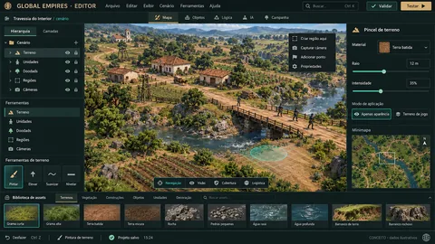
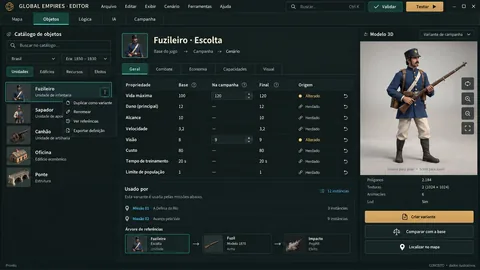
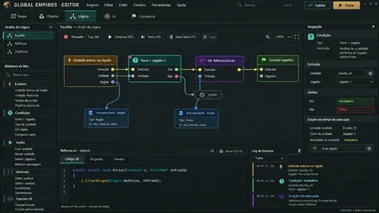
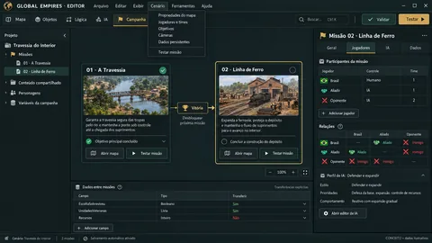
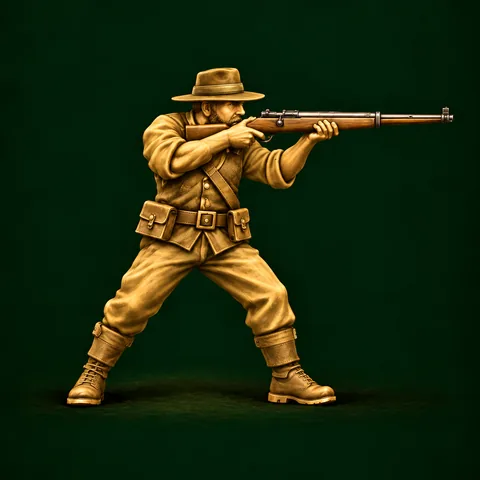
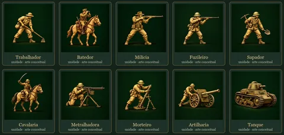
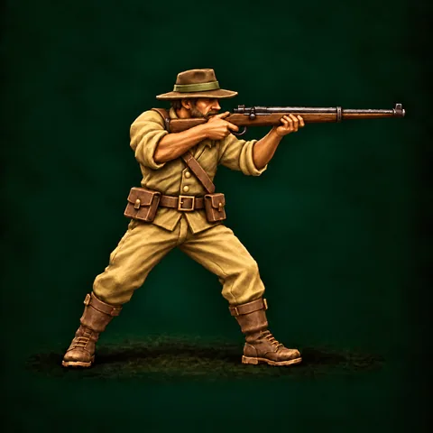

Gerado — não edite à mão · fonte: painel.json · 21 de outubro de 2026
Painel
Global Empires
RTS sucessor espiritual do AoE3: Brasil, eras Industrial e Aço, no mapa Travessia do Interior, contra a IA. Atualizado em 21 de outubro de 2026.
Era do Aço — integração local em conferênciaProtótipoFases 1–8 + W14
SimulaçãoSuíte final em execução
Main localac933e1
Entregas90
Decisões pendentes155
Playtest atual77 itens a conferir
Progresso do marco
8 de 13 tarefasFase atual: Combate por posições
- Protótipo · Eras I e IIfeita
- Combate por posiçõesatual
- Aviaçãofutura
- Modelos finaisfutura
- Era III — Mecanizaçãofutura
- Era IV — Atômicafutura
- Era V — Informaçãofutura
Agora
- Aviação, HUD e F10 preparados para a main local39 observações implementadas, fila global A, cartões compactos, retratos no padrão do Trabalhador e F10 com Números A, Só teste B e Mapa C. Caixa fixa de atalhos removida; instruções de ações ficam abaixo dos recursos.
- Sapador e IA com as capacidades recentesEngenharia de combate, lança-chamas e carga com modelos low poly próprios. IA usa trincheiras, Assalto, equipamentos e aviação. Recuo da carga corrigido, inclusive com tanque móvel; estado v45.
- Editor GE continua em concepçãoEstudos WC3/SC2 e quatro conceitos disponíveis na aba Editor. A proposta e o recorte da primeira missão editável aguardam avaliação.
- Git só local até 31/10Merge solicitado para a main local. Revisão independente do Claude e suíte final em execução; o GitHub permanece sem publicação deste lote.
Com você
- Conferir os 77 itens no F11: HUD/F10, aviação, modelos/equipamentos do Sapador, recuo contra tanque móvel e IA em partida normal.
- Avaliar a proposta e as quatro artes da aba Editor.
- Responder às decisões Pendentes; implementação e testes técnicos não equivalem ao aceite humano ou de balanceamento.
Últimas imagens








Handout do projeto (PDF)Conceito da primeira iteração (PDF)Catálogo das 21 folhas (PDF)